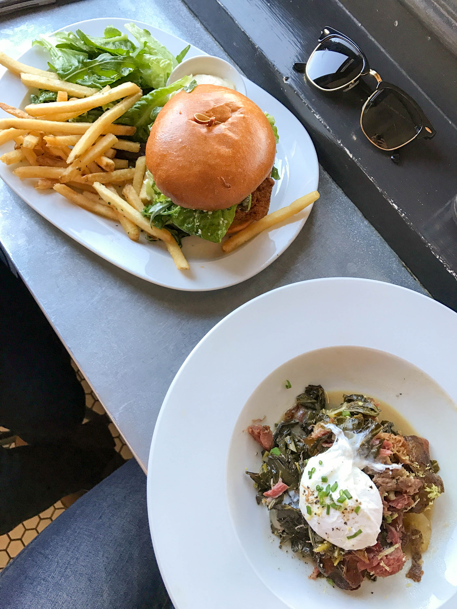
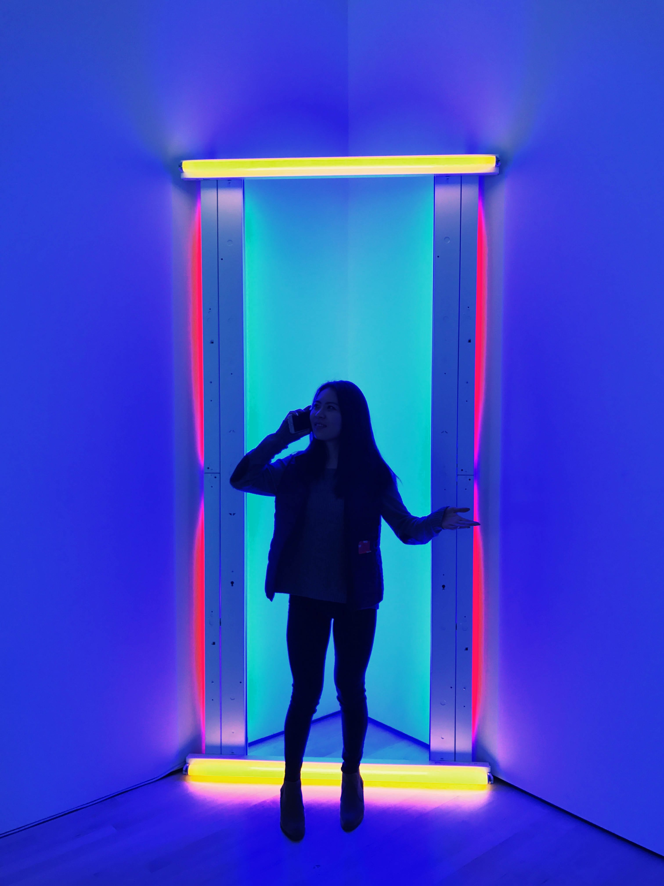
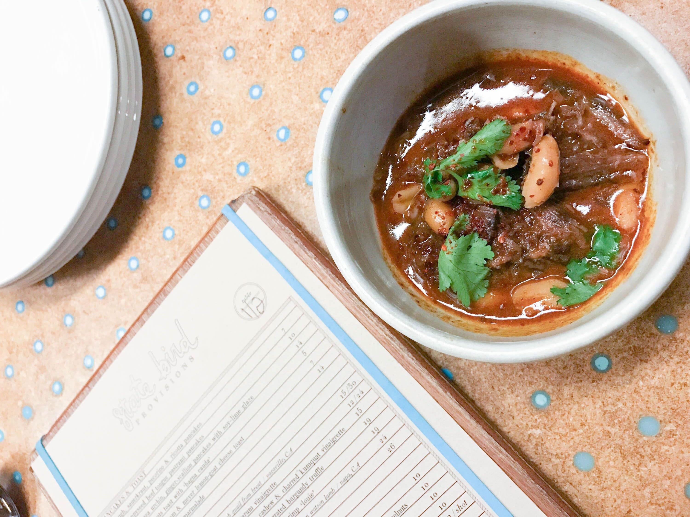
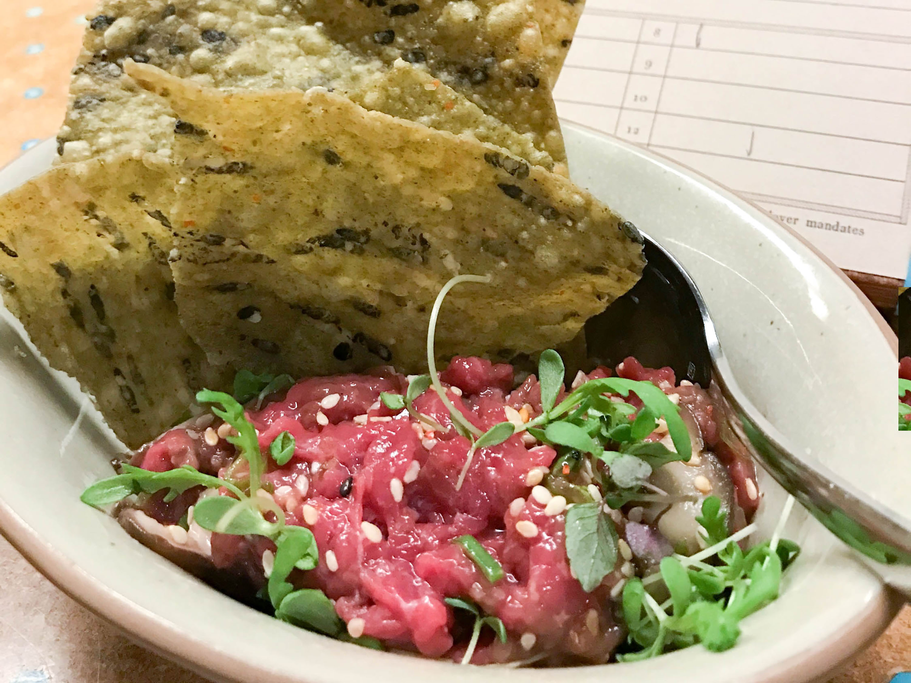
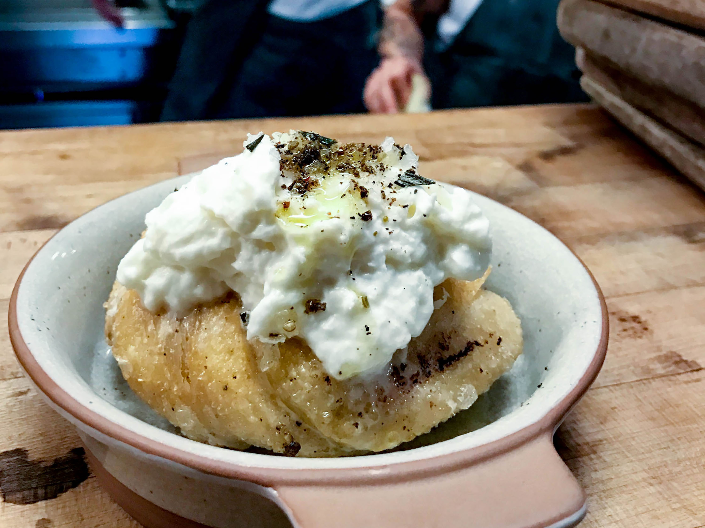

San Francisco, CA

My best friend took an eight hour bus ride from LA just to see me on my birthday, so I definitely had to make the most out of her stay back home in the bay. We love doing basic things such as strolling through museums, looking at city views, and eating delicious and unique foods - everything you can do in the small city of San Francisco! Because SF is so crowded, we also take public transportation to the city. Right off the Caltrain, there is a delicious brunch place call Marlowe - a must-try if you love brunch!

If you have a chance, check out the SF Modern Museum of Art (SFMOMA) for art of all kinds - glass, neon, primary-colored focused art pieces, digital art, and the list just goes on. We came to the museum around 2pm on a Saturday, but it was super crowded (not unusual in SF). Made our rounds to popular art pieces because there are seven floors to this museum and we did not have that much time. We wanted to leave at 4pm so we can get in line for State Bird Provisions, a one Michelin star restaurant that is impossible to get reservations, but they leave 1/3 of the restaurant for walk-ins.


Got to the restaurant at about 4:45pm, and there was already at least 10 parties in front of us - and the place doesn't even open until 5:30pm! About 25 minutes into waiting in line, one of the chefs brought out some hot chocolate and thanked us for standing in line in the freezing weather. That tiny glass of hot chocolate might be the BEST I've ever had in my life. At 5:30, the line tripled and we were glad we came so early. When we got to the front, you can either choose to get seated now or wait later after 7pm. Since there were people filling up those spots in front of us, we didn't want to risk a 8-9pm dinner and sat right away - right at the counter where we can watch chefs cook! We ordered many small "dim sum" dishes, but the garlic bread with burrata (bottom left) was the BEST dish we had. Needless to say, this place was definitely worth the hour wait in the 40 degree weather - and I wouldn't want to be freezing in line with anyone else other than my best friend.
